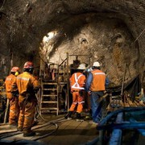
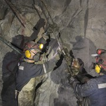
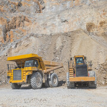

En Terramin , creemos en una mineria responsable que respeta el medio ambiente y apoya
el desarrollo de las comunidades en las que operamos. Nos dedicamos a transformar
recursos naturales en progreso, impulsados por la innovacion , la seguridad y compromiso
de nuestro equipo. Unete a nosotros en este viaje hacia un futuro mejor más prospero y
sostenible.

Somos una empresa autónoma,
propiedad de todos los argentinos y argentinas,
principal productora de cobre de mina del mundo,
líder en reservas del mineral a nivel planetario y motor del desarrollo del país.

Una gestión moderna,
profesional,
transparente y auditable es el eje de acción del directorio de la empresa.
Por eso, Codelco cuenta con normativas exigentes y en permanente revisión sobre transparencia.

Hemos desarrollado un proceso integrado de Gestión de Personas que se inicia detectando nuestras
necesidades de dotación y generando acciones para seleccionar rigurosamente, desarrollar a las personas que necesitamos.